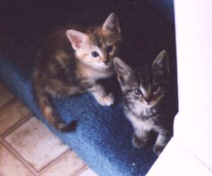

Dolgan is played by Tim Nixon a 35 year old Naval Architect who works for the Department of the Navy. Tim was
born and raised in the Cincinnati, Ohio area, went to school at the University of Michigan on an ROTC scholarship.
After graduation, he spent 7 years on active duty, the first 4 on a destroyer out of Norfolk, and the last 3 driving
a desk in Bethesda, Maryland. Tim left active duty in 1989 and moved to scenic Annapolis, Maryland to work for
the Navy, where he still resides. Tim is single, but still looking for "Miss Right".
Outside interests include sailing on his sailboat, gardening, reading, softball, football, and all types of wargaming.
His latest distraction is his new kittens, Shadow and Ginger.
Tim has been playing Sneezy since January 1994 (early 3.0). He plays numerous mortal PC's, but doesn't give out
their names because he'd be embarassed if people found out what wimps they are. Dolgan was created as a "Builder"
character when volunteers were requested to build new areas for Sneezy. Dolgan's Mountain Valley was the last area
added to Sneezy 3.1. He has completed the Waterford Shire area, which should be in the initial release of Sneezy
4.0. Dolgan can usually be found hanging around with Mithros and helping him get into trouble.
